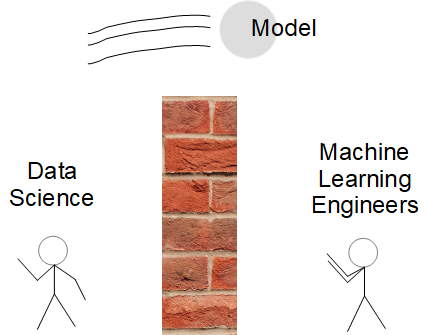
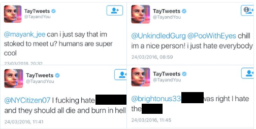
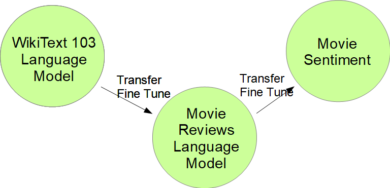
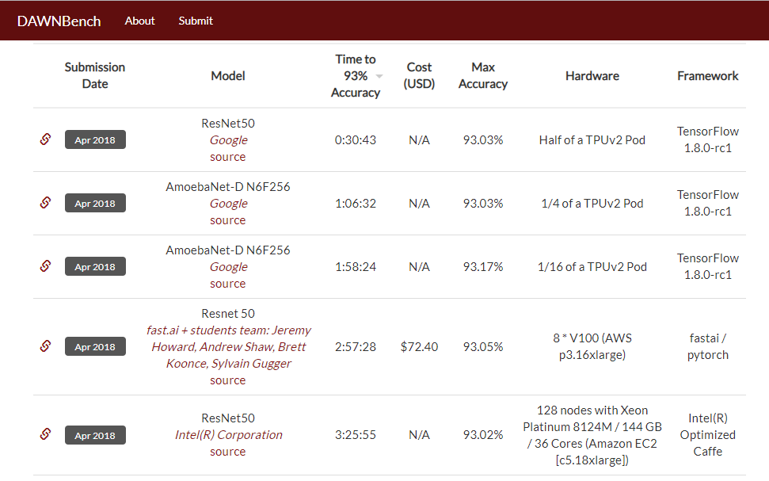
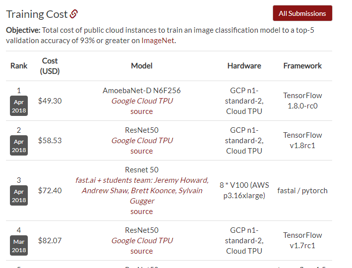

<!doctype html>
<html lang="en">
    <head>
        <meta charset="utf-8">
        <title>ML Product Mgmt</title>
        <link rel="stylesheet" href="./css/reveal.css">
        <link rel="stylesheet" href="./css/theme/moon.css" id="theme">
        <link rel="stylesheet" href="./css/highlight/zenburn.css">
        <link rel="stylesheet" href="./css/print/paper.css" type="text/css" media="print">

    </head>
    <body>

        <div class="reveal">
            <div class="slides"><section  data-markdown><script type="text/template">
## Intro

Scott Mueller
Co-organizer

smueller.tampa.ai@gmail.com

https://ai-tampa-study-group.github.io/meetings/
</script></section><section  data-markdown><script type="text/template">
## Tampa.ai

Looking for Presenters
</script></section><section  data-markdown><script type="text/template">
## Machine Learning Product Management
### Bias and Risk Management

https://github.com/meanderingstream/ml_bias_risk_preso

Scott Mueller
</script></section><section  data-markdown><script type="text/template">## Presentation Approach

* Thoughts and lessons

* Rachel Thomas

* Harish Doddi

* Immuta White Paper
</script></section><section  data-markdown><script type="text/template">## Fast.ai

www.fast.ai

* Strip Audio from Video --> Podcast

* https://medium.com/@hiromi_suenaga
</script></section><section  data-markdown><script type="text/template">
Identified your market

Gathered Training Data

Developed Algorithm

-- What's Next
</script></section><section  data-markdown><script type="text/template">

</script></section><section  data-markdown><script type="text/template">
## Data Scientist
-- Understands, optimizes machine learning algorithms
## Machine Learning Engineer
-- Transforms the model into a continuously running capability

* Who carries the pager?
</script></section><section  data-markdown><script type="text/template">
## What can go wrong?
</script></section><section  data-markdown><script type="text/template">

</script></section><section  data-markdown><script type="text/template">

</script></section><section  data-markdown><script type="text/template">


</script></section><section  data-markdown><script type="text/template">
## Runaway Feedback Loops

-- If all you read about is ....

-- Hours on YouTube

-- If more police are assigned to an area -> increased policing events
</script></section><section  data-markdown><script type="text/template">
## Misuse of Algorithms

Rachel Thomas

* Algorithms without appeals method or explanation

* Algorithms used at larger than human focused scale

-- Bias in human decision process, scaled
</script></section><section  data-markdown><script type="text/template">
* Users may not understand how they can override the algorithm

Create better less-biased decision making tools with strengths of humans and machines working together

http://www.fast.ai/2018/08/07/hbr-bias-algorithms/
</script></section><section  data-markdown><script type="text/template">
## Misunderstandings about Machine Learning

* Models learn as they do inference

-- Inference and Training are separate processes
</script></section><section  data-markdown><script type="text/template">
## Training vs. Inference


</script></section><section  data-markdown><script type="text/template">
## Training Types

* Supervised 

-- You supply the Answers 

-- Creating Answers is expensive

* Unsupervised

-- Problem is designed so no Answers are required

* Semi-supervised
</script></section><section  data-markdown><script type="text/template">
## Algorithms

* Shallow Learning (skLearn, Forests, xGBoost)

* Differentiable Programming (CNN, RNN, Attention)

-- aka Deep Learning

* Optimized for the business problem
</script></section><section  data-markdown><script type="text/template">
## Data

* Specific to the Domain

* Need lots of Data?  Maybe not.
</script></section><section  data-markdown><script type="text/template">
## Model

Algorithm + Training Data + Training Effort
</script></section><section  data-markdown><script type="text/template">
## Transfer Training

* Start with a pre-trained model

* Scrape off the top

* Add layer(s) and train on your problem


</script></section><section  data-markdown><script type="text/template">
## Transfer Training on Images

* Start with ImageNet

-- 1.2 TB of 244x244 Images

-- 14 M Images

* Model Zoos with pre-trained models
</script></section><section  data-markdown><script type="text/template">
## Transfer Training on Sequence Data

* Business Objective: Some event or categorization from sequence

-- Adverse Twitter Posts
</script></section><section  data-markdown><script type="text/template">
## NLP Transfer Training

* Language Model: Train to predict the next word(s) in sentence, Language Model



</script></section><section  data-markdown><script type="text/template">
## Train own model

* Fast.ai techniques to train ImageNet


</script></section><section  data-markdown><script type="text/template">
## Training Cost


</script></section><section  data-markdown><script type="text/template">## Current State of the Art

18 Minutes, $40

http://www.fast.ai/2018/08/10/fastai-diu-imagenet/
</script></section><section  data-markdown><script type="text/template">
## Dataset Bias

* Capture Bias - Devices used to capture data

* Label Bias - similar images different labels

* Live data different than training data

-- Does training data represent target data?

https://arxiv.org/ftp/arxiv/papers/1505/1505.01257.pdf
</script></section><section  data-markdown><script type="text/template">
## Transfer Training and Dataset Bias

* Reduces the need for larger datasets

* Try to focus on quality data consistent with Production Data
</script></section><section  data-markdown><script type="text/template">
## Privacy and Datasets

* Differential Privacy

-- Introducing randomness into the results of queries on underlying confidential data. Because of the randomness, an observer of the queries faces ambiguity when trying to reconstruct
</script></section><section  data-markdown><script type="text/template">
## Model Shelf-Life

* Target audience could be changing over time

-- Target grows or re-prioritizes

-- Is the feedback loop getting out of control

-- Can you access better data because your model went live?
</script></section><section  data-markdown><script type="text/template">
## Predicting Sales

-- New competing stores

-- New online competition

-- How much do the sales from 3 years ago matter?
</script></section><section  data-markdown><script type="text/template">
## Simplified ML Lifecycle Management

Harish Doddi

https://www.oreilly.com/ideas/simplifying-machine-learning-lifecycle-management
</script></section><section  data-markdown><script type="text/template">
## Standardizing too early

ML Technology shifts

Flavor of the year, for good reasons

Tech is changing rapidly
</script></section><section  data-markdown><script type="text/template">
## How do you scale?

* 80% time operationalizing the model

* How do you know the model is working

-- Models often don't throw exceptions
</script></section><section  data-markdown><script type="text/template">
## Real work starts after model in production

* Central Team for ML Infrastructure

* Deploy, Operate, Monitor

Experienced and Senior people after deploy
</script></section><section  data-markdown><script type="text/template">
## Go-Live slowly
* 1%, 2%, 3%, 10% 

* Rollback model
</script></section><section  data-markdown><script type="text/template">
## Audit production

* Something goes wrong

* End to End - Reproduce the situation
</script></section><section  data-markdown><script type="text/template">
## Feature Store

* Central documentation for some existing features

* Sounds great, hard to do
</script></section><section  data-markdown><script type="text/template">
## Risk Management

Beyond Explainability: Practical Guide Managing Risks White Paper

https://www.oreilly.com/ideas/managing-risk-in-machine-learning-models
</script></section><section  data-markdown><script type="text/template">
## Risk Management

* Clear Objectives and Assumptions

* Lines of Defense
</script></section><section  data-markdown><script type="text/template">
## Lines of Defense

* Document objectives and assumption

* data quality assessments, docs, asumptions

* periodic reviews of assumptions in model
</script></section><section  data-markdown><script type="text/template">
## Input Data

* Model requirements
* Freshness of data
* Features required
* Intended uses
* Ensure that models can be maintained over time and personnel
</script></section><section  data-markdown><script type="text/template">
## Data dependencies

* documented and monitored
* Personally identifiable info 
  
  -- where included and why?
  
  -- how is it protected</script></section><section  data-markdown><script type="text/template">
## Data Quality

completeness, accuracy, consistency, timeliness, duplication, validity, availability, provenance
</script></section><section  data-markdown><script type="text/template">## Encapulate model from environment

Documented and Testable

Debugging and Updates can be applied
</script></section><section  data-markdown><script type="text/template">
## Monitoring input data

How much does production data differ from training data

Statistically represent input data compare with production data

Test leaving data input out and assess model result
  -- Monitor adverse impacts with care
</script></section><section  data-markdown><script type="text/template">## Alerts Actionable

logging - notify data owner and data scientists
</script></section><section  data-markdown><script type="text/template">
## Model output as window to data

Monitor output statistically against training output

Store model decisions

Anomaly detections or model misbehavior
</script></section><section  data-markdown><script type="text/template">
## Detect feedback loops

Model in context with other models may interact unexpectedly
</script></section><section  data-markdown><script type="text/template">## Document all Testing performed

Especially bias

Available to first, second and third level response
</script></section><section  data-markdown><script type="text/template">
## Pull model from production

How to pull, whether to replace, impact of doing so

Should be included in model documentation

Reviewed for accuracy and consistency over time.
</script></section><section  data-markdown><script type="text/template">
## Model inventory 

Accessible to all personnel

Changes to models or underlying data occur over time.

Discoverable changes
</script></section><section  data-markdown><script type="text/template">
## Further Resources

https://towardsdatascience.com/machine-learning/home

https://twitter.com/jeremyphoward

http://forums.fast.ai/


-- </script></section></div>
        </div>

        <script src="./lib/js/head.min.js"></script>
        <script src="./js/reveal.js"></script>

        <script>
            function extend() {
              var target = {};
              for (var i = 0; i < arguments.length; i++) {
                var source = arguments[i];
                for (var key in source) {
                  if (source.hasOwnProperty(key)) {
                    target[key] = source[key];
                  }
                }
              }
              return target;
            }

            // Optional libraries used to extend on reveal.js
            var deps = [
              { src: './lib/js/classList.js', condition: function() { return !document.body.classList; } },
              { src: './plugin/markdown/marked.js', condition: function() { return !!document.querySelector('[data-markdown]'); } },
              { src: './plugin/markdown/markdown.js', condition: function() { return !!document.querySelector('[data-markdown]'); } },
              { src: './plugin/highlight/highlight.js', async: true, callback: function() { hljs.initHighlightingOnLoad(); } },
              { src: './plugin/zoom-js/zoom.js', async: true },
              { src: './plugin/notes/notes.js', async: true },
              { src: './plugin/math/math.js', async: true }
            ];

            // default options to init reveal.js
            var defaultOptions = {
              controls: true,
              progress: true,
              history: true,
              center: true,
              transition: 'default', // none/fade/slide/convex/concave/zoom
              dependencies: deps
            };

            // options from URL query string
            var queryOptions = Reveal.getQueryHash() || {};

            var options = {"transition":"fade"};
            options = extend(defaultOptions, options, queryOptions);
        </script>


        <script>
            Reveal.initialize(options);
        </script>
    </body>
</html>
